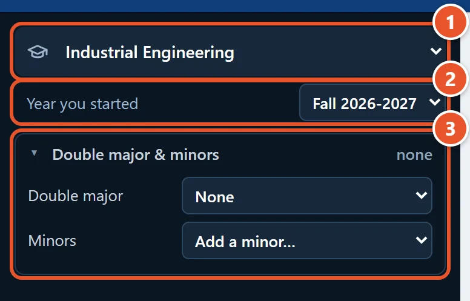
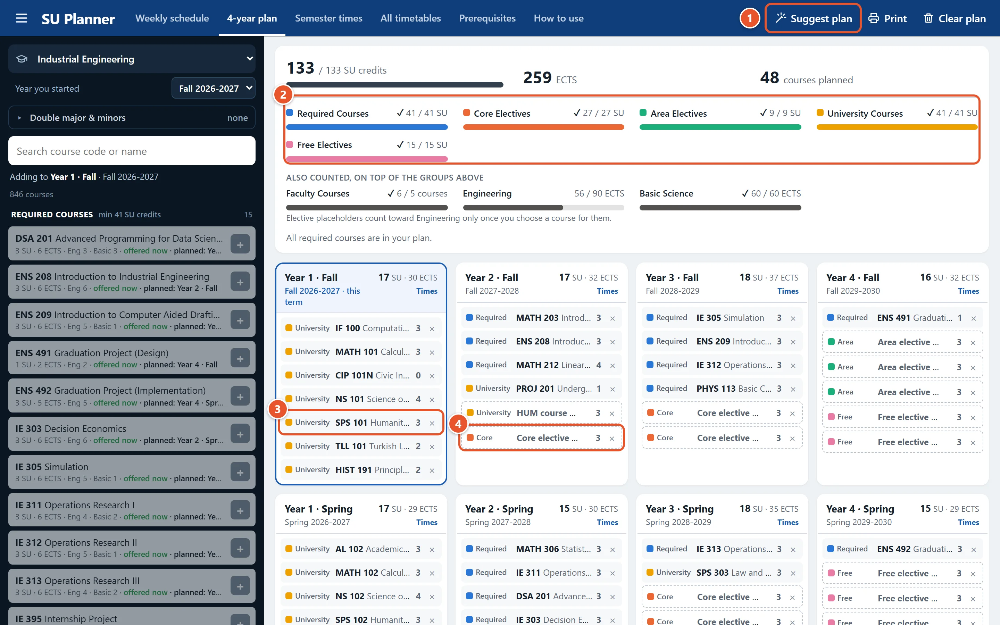
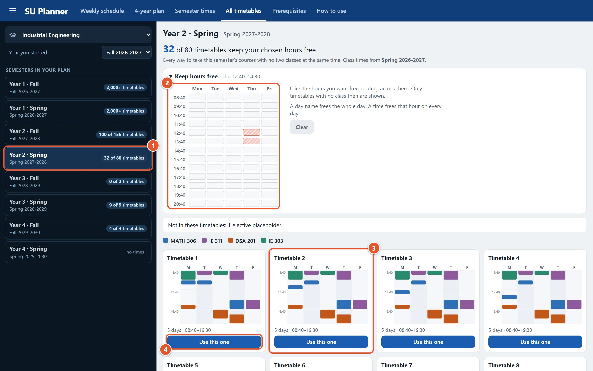
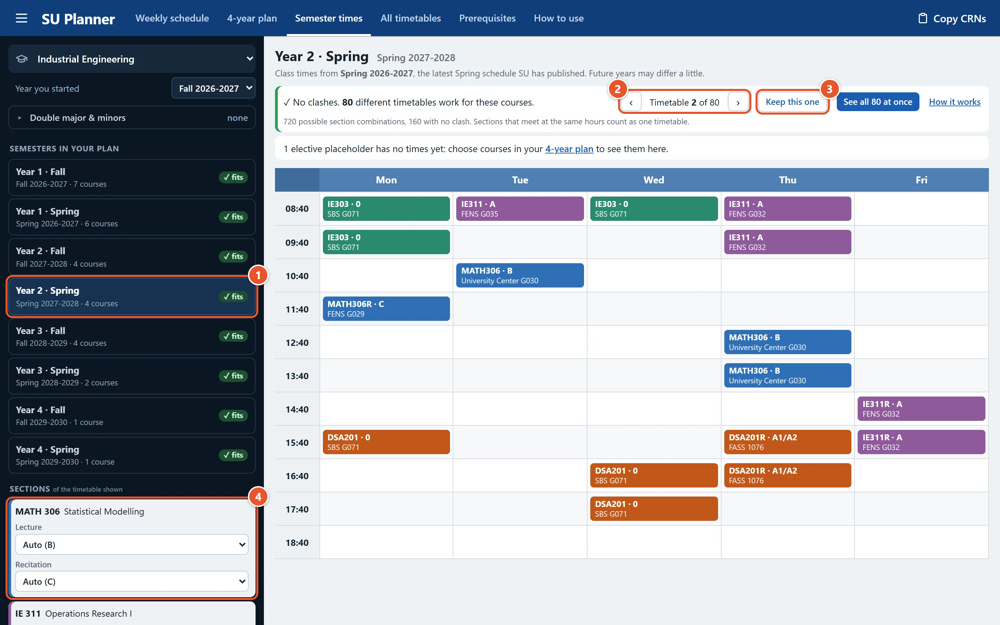
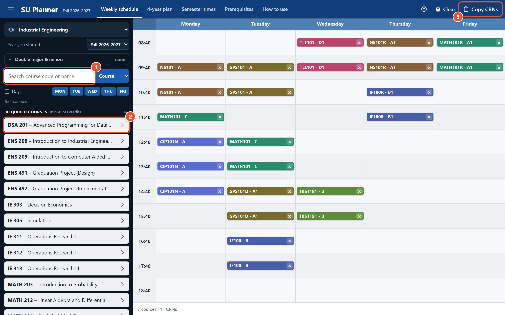
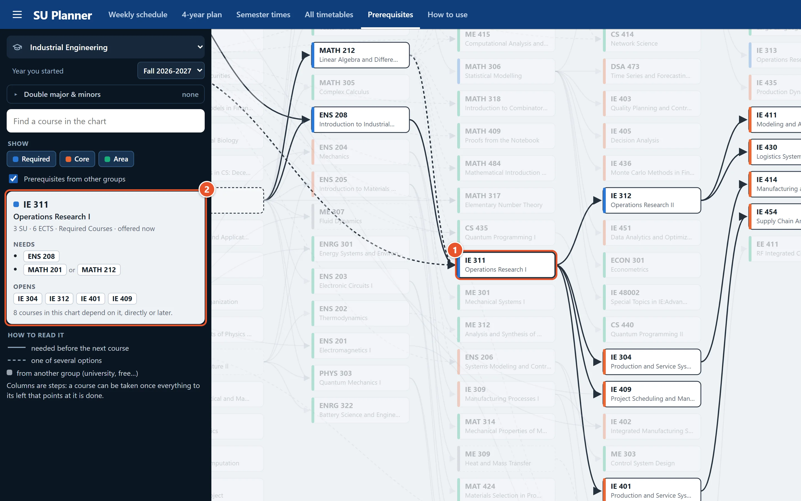

How to use SU Planner
Plan your whole degree in a few steps. Everything you choose is saved in this browser.
Pick your program
Do this once, in the side panel. Every page uses it.
- Choose your program.
- Choose the year you started. Your requirements depend on it.
- Optional: add a double major or minors.


Plan your 4 years
Open 4-year plan →Your eight semesters, filled in for you.
- Suggest plan fills every semester. Press it any time to start over.
- The bars show what each requirement still needs.
- Drag a course to another semester. Add courses with + in the course list.
- Dashed cards are electives you still choose: click one, then pick a course.

Red text on a course means it comes before its prerequisite. Move it to a later semester.
See every possible timetable
Open All timetables →Every way to take a semester's courses with no clashes, side by side.
- Pick a semester. The number is how many timetables work.
- Optional: click or drag over the hours you want free. Click a day for a day off, or a time to free it every day.
- Each card is one full week. Point at a block to see its course and section.
- Use this one opens it in Semester times, ready to copy the CRNs.

Look at one timetable closely
Open Semester times →One timetable at full size, with every section and room.
- Pick a semester from your plan.
- ‹ › (or ← →) shows the next timetable. See all at once opens the overview above.
- Keep this one saves its sections.
- Or choose a section yourself. Only timetables with it are shown; Auto frees it again.

A red warning means two courses clash in every timetable. Move one of them to another semester in your 4-year plan.
Build this term's schedule
Open Weekly schedule →Pick sections by hand for the current term.
- Search a course by code, name or instructor. Point at a course to see shadows of its sections on the timetable: green fits, red clashes.
- Open a course and tick one section of each part (lecture, recitation…).
- Copy CRNs when you are ready to register.

Check prerequisites
Open Prerequisites →See which courses open which.
- Click a course. Arrows show what it needs and what it opens.
- The side panel lists them.

Good to know
- Your plan is saved in this browser only. Another browser or your phone starts empty.
- Class times come from SU's latest Fall and Spring schedules. Future terms may change.
- Check your final plan with your advisor and SU's Degree Evaluation.